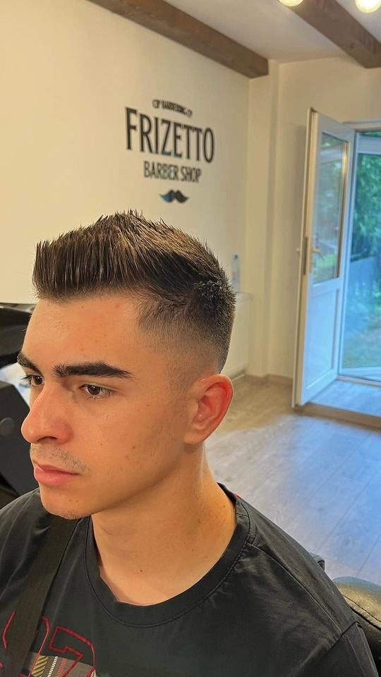
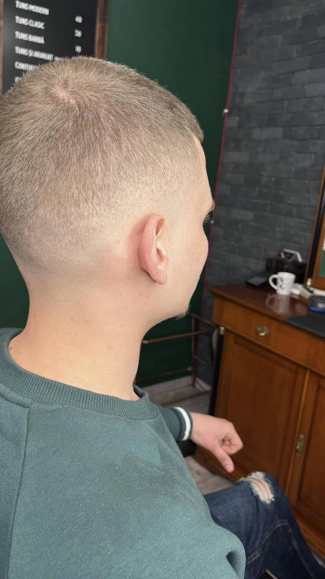
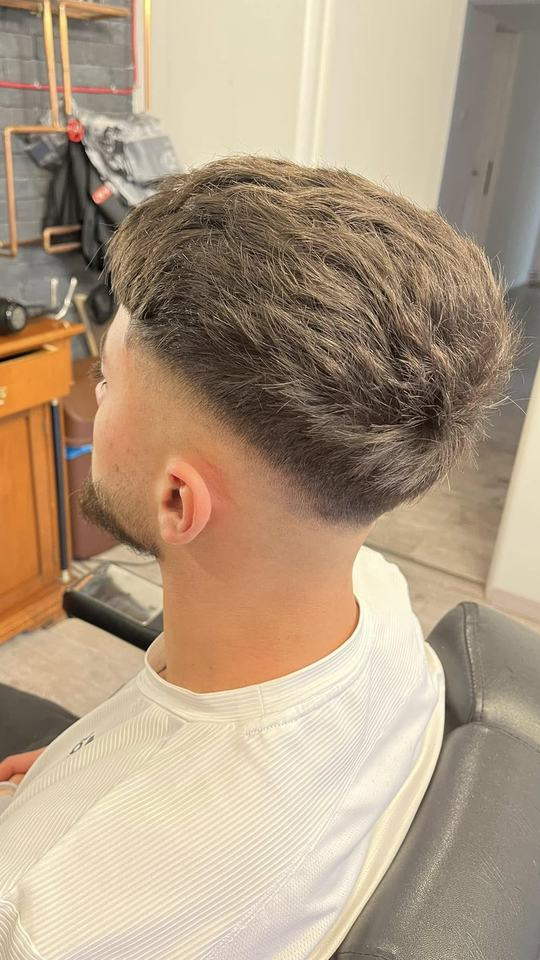
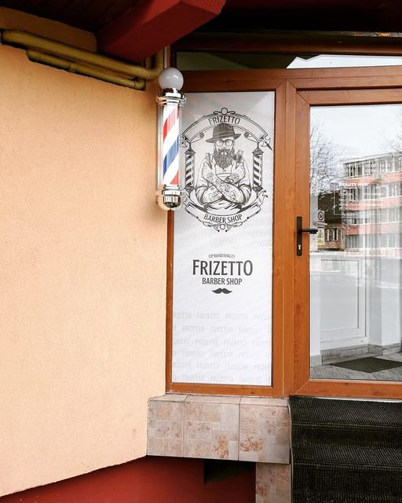

Fade, textură și linii curate. O tunsoare actuală, adaptată formei capului și felului în care îți porți părul.
FRIZERIE PENTRU BĂRBAȚIBRAȘOV, ROMÂNIA +
CLASIC.PRECIZIE.Stil.
Atmosfera frizeriilor de altădată.
Tuns și barbă, doar pentru bărbați.

01 / FADE CU VOLUMEXPLOREAZĂ PORTOFOLIUL
TUNS MODERNTUNS CLASICARANJAT BARBĂFRIZERIA DE ALTĂDATĂCALEA BUCUREȘTI 44
01 / FILOSOFIA NOASTRĂ
Un tuns bun se vede.
Un tuns al tău se simte.
Frizetto e inspirată de atmosfera frizeriilor de altădată și a fost creată pentru bărbați. Aici te așteaptă tunsori, aranjat și stilizat de barbă, lucrate cu răbdare și atenție la fiecare detaliu.

MÂINI SIGURE. STIL DE ALTĂDATĂ.
01
Ascultăm.
Înainte de prima mișcare a foarfecii, discutăm despre stilul pe care îl cauți.
02
Construim.
Lucrăm cu forma, textura și direcția naturală a părului și a bărbii tale.
03
Găsește-ți stilul Finisăm.
Un contur curat. O tranziție precisă. Un look pe care îl poți purta și mâine.
02 / CE FACEMTEHNICĂ. GUST. ECHILIBRU.
BINE TUNS.
FĂRĂ COMPROMIS.
De la o tunsoare nouă la barba care o completează.

MADE AT FRIZETTO01 / 04
03 / ARHIVA VIZUALĂ /FRIZETTO
REZULTATUL
vorbește.
Tunsori, barbă și momente din frizerie.
Fotografii din postările noastre.
01 / 09
Textured crop
TUNSORI / FRIZETTOCLICK PE CADRUL CENTRAL PENTRU A-L MĂRI PE MOBIL, GLISEAZĂ STÂNGA SAU DREAPTA
04 / FRIZERIA DE ALTĂDATĂOLD SCHOOL. CLEAN CUTS.
CIP BARBERING CO.MESERIA
MESERIA
SE PĂSTREAZĂ.
Stilul
SE POARTĂ.
De la stâlpul de frizerie de la intrare până la lemnul și oglinzile din interior, Frizetto păstrează aerul frizeriilor clasice. Serviciile sunt dedicate exclusiv bărbaților: tuns, aranjat și stilizat barbă.
Vezi-ne pe Facebook
frizeriile de altădată.
05 / PROGRAMĂRIUN MOMENT AL TĂU.
TIMP PENTRU
tine.
Alege serviciul, data și ora preferată. Pregătim mesajul, iar tu îl trimiți frizeriei pe WhatsApp pentru confirmare.
06 / SCAUNUL TĂU TE AȘTEAPTĂ
NE VEDEM
ÎN OGLINDĂ.
Tu aduci ideea.
Noi avem grijă de restul.
Calea București, nr. 44
Brașov 500326, România
- Luni - vineri
- 10:00 - 19:00
- Sâmbătă
- 10:00 - 14:00
- Duminică
- Închis
Sună sau scrie-ne pe WhatsApp pentru programare, tarife și disponibilitate.
FRIZETTO / BRAȘOV
Deschide traseul în Google Maps